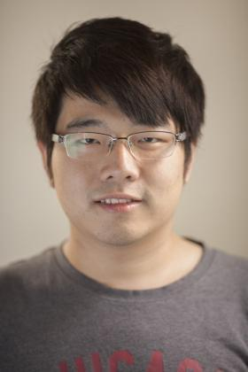

|
 |
Hao (Michael) Tong is a second year Ph. D. student in the Department of Computer Science at the University of Chicago. He finished his bachelor degree in Beihang University, China. His current research focuses on new storage techniques in improving performace and reliability of storage systems. His works leverage modifications in operating system kernel, simulations to provide improvements on existing storage systems as well as new ideas on new storage schemes. |